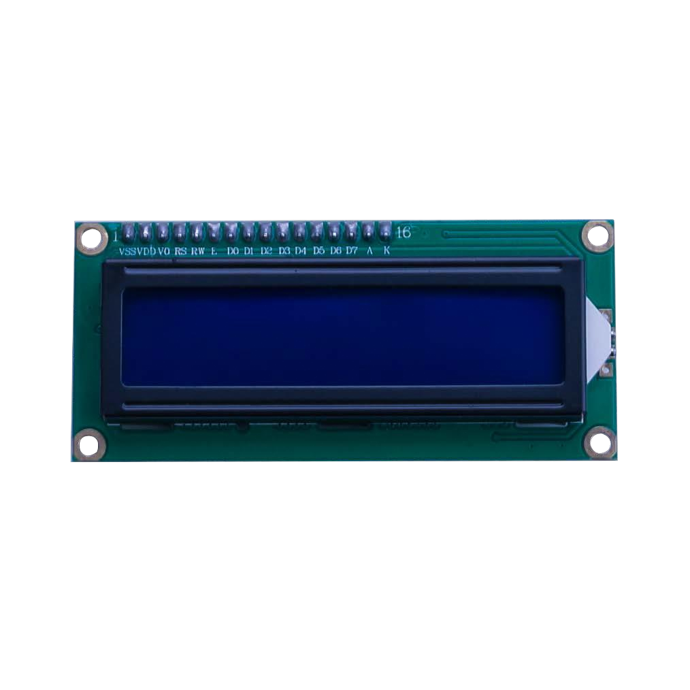
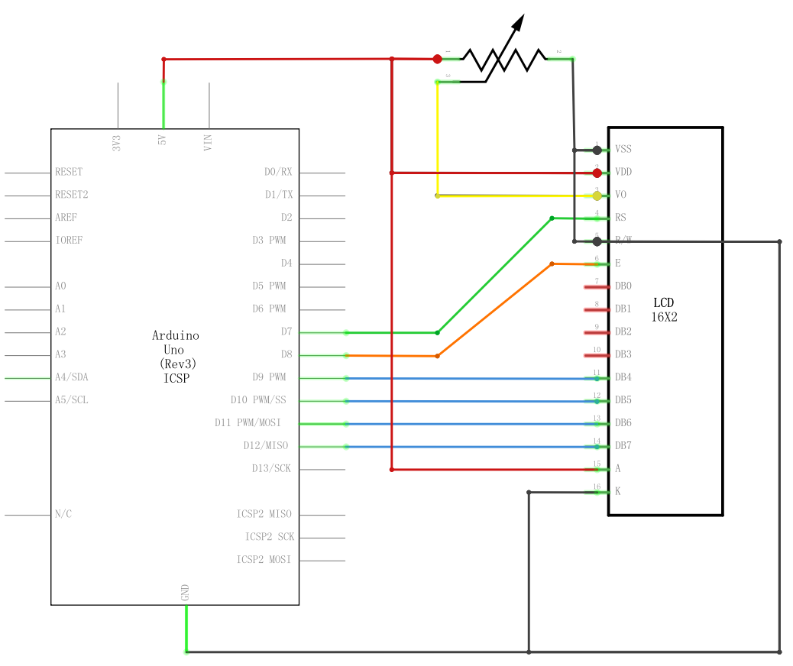
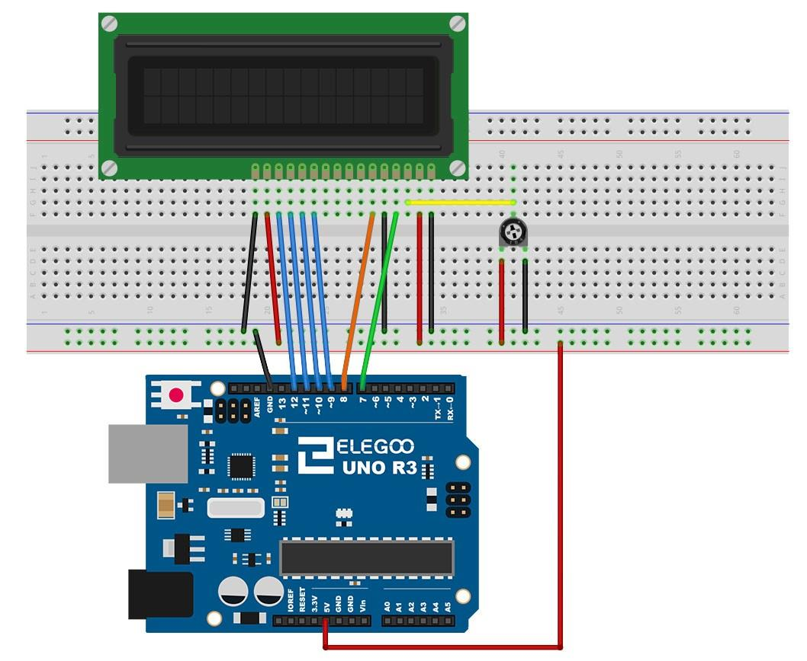
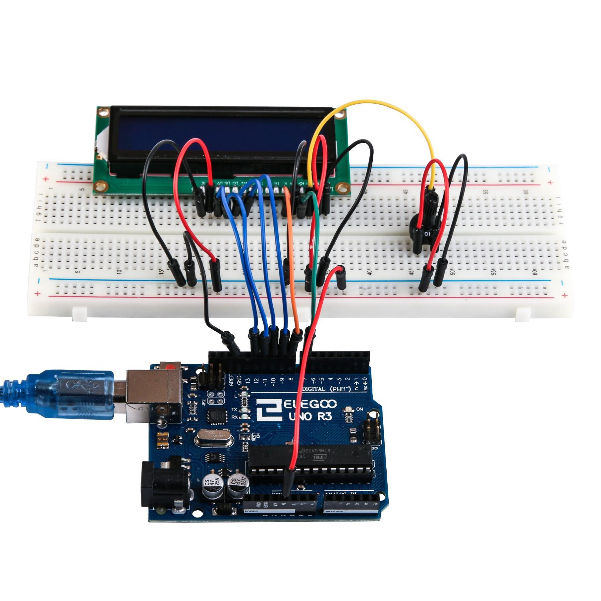

En esta lección, usted aprenderá cómo conectar y usar una pantalla LCD
alfanumérica. La pantalla tiene una retro iluminación LED.
Puede ver los rectángulos para cada carácter en la pantalla
y los píxeles que componen cada carácter, la pantalla es blanca y azul, además está
diseñada para mostrar texto.
En esta lección, se ejecutará el programa de ejemplo de Arduino para la biblioteca
de la LCD, pero en la siguiente lección, podremos mostrar en nuestra pantalla la temperatura mediante sensores.
(1) x Elegoo Uno R3
(1) x Módulo LCD1602
(1) x Potenciómetro (10k)
(1) x Protoboard
(16) x M-M cables (cables de macho a macho)
LCD1602, o pantalla de cristal líquido de tipo 1602, es un tipo de módulo de matriz
de puntos para mostrar letras, números y caracteres, etc. Se compone de posiciones
de matriz de puntos de 5x7 o 5x11; cada posición puede mostrar un caracter.
Hay un punto entre dos caracteres y un espacio entre líneas, separando así los caracteres
y las líneas. El nombre de modelo 1602, significa que muestra 2 líneas de 16 caracteres.
En general, LCD1602 tiene puertos paralelos, es decir, controlaría varios pines al mismo tiempo.
LCD1602 se puede clasificar en conexiones de ocho puertos y cuatro puertos.



No lo olvides, el cable largo amarillo que conecta del potenciómetro a la clavija 3 de la pantalla. El potenciómetro se utiliza para controlar el contraste de la pantalla.
Antes de cargar el script, asegúrate de que esta instalada la biblioteca LiquidCrystal. El
archivo puedes descargarlo desde aquí
Una vez efectuado todo el cableado, descargaremos el script del siguiente este
link y lo cargaremos como hemos aprendido.
Al subir el código a la placa Arduino, veremos que la pantalla muestra el mensaje Hola, mundo , seguido de un número que cuenta de cero. Evaluemos el script:
#include < LiquidCrystal.h >
Esto dice Arduino que queremos utilizar la biblioteca de LiquidCrystal. A continuación tenemos la línea que teníamos que modificar. Esto define qué pines de Arduino son para conectarse a que pines de la pantalla.
LiquidCrystal lcd (7, 8, 9, 10, 11, 12);
Después de subir este código, asegúrese de que se enciende la retroiluminación y ajustar el potenciómetro de toda la manera alrededor hasta que aparezca el mensaje de texto En la función de configuración, tenemos dos comandos:
LCD.Begin (16, 2);
LCD.Print ("Hola, mundo!");
La primera línea se indican cuántas columnas y filas tiene la
pantalla. La segunda línea muestra el mensaje que vemos en la primera línea de la
pantalla.
En la función de 'loop', aso tienen dos comandos:
LCD.setCursor (0, 1);
LCD.Print(Millis()/1000);
La primera línea establece la posición del cursor (donde aparecerá el siguiente texto)
columna 0 y fila 1. Los números de columna y fila comienzan en 0 en lugar de 1.
La segunda línea muestra el número de milisegundos desde que se restableció el
Arduino.

Volver al índice